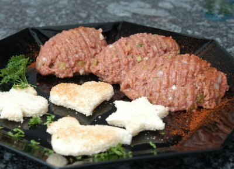

| Zutaten für 4 Personen: | |
| 550 g | gehacktes Tatarfleisch (doppelt wolfen lassen) |
| 4 | Eigelb |
| 1 dl | Steak Tatarsauce (siehe unten) |
| schwarzer Pfeffer aus der Mühle | |
| Salz | |
| 8 | Tranchen Toastbrot |
| Butter | |
| 5 dl Tatarsauce: | |
| 3 El | fein gehackte Cornichons |
| 3 El | fein gehackte Zwiebeln |
| 3 El | fein gehackte Kapern |
| 3 El | fein gehackte grüne Oliven |
| 3 El | fein gehackte Gewürzgurken |
| 250 g | Tomatenketchup |
| 2 El | milder Tafelsenf |
| 3 El | Sonnenblumenöl |
| 1 Spritzer | Tabasco |
| 1 Tl | Paprika edelsüss |
| 1 Tl | Salz |
| 1 Tl | weisser Pfeffer aus der Mühle |
Fleisch, Eigelb und Tatarsauce in eine mittlere Schüssel geben und mit zwei Gabeln gut vermischen; mit Salz und Pfeffer abschmecken.
Das fertige Tatar in vier Portionen teilen und auf Tellern gefällig anrichten.
Getoastetes Brot und Butter dazu servieren.
Alle gehackten Zutaten in eine kleine Schüssel geben, Ketchup und Senf dazugeben, kurz mischen und unter Rühren das Sonnenblumenöl beifügen. Tabasco, Paprika, Salz und Pfeffer beigeben, alles gut vermischen und abschmecken. Die fertige Sauce in 1dl Portionen tiefkühlen. 1 dl entspricht der Menge, die für ein Beefsteak Tatar benötigt wird.
Nachdruck aus dem "Ersten Mövenpick Kochbuch", Südwest Verlag, München, 3. Auflage 1991
War Sensationell gut! Ich verstehe nicht ganz wieso man 5dl Sauce machen soll wenn man dann bloss 1dl braucht? Dann hat man ja wieder ewig Zeug im Tiefkühler rumliegen. RE 13.8.2008
@LINKBACK_TAG@ @WAKELOCK@